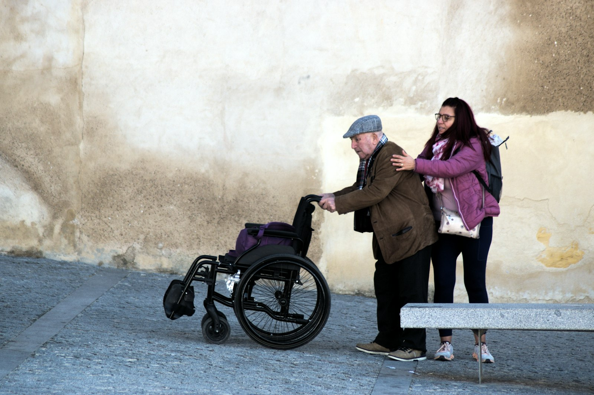

Bagaimana Travel Seharusnya Mengatasi Delay Pesawat, Sakit di Tanah Suci, dan Koper Tertinggal

Sebelum mentransfer uang muka, ada satu pertanyaan yang jarang berani ditanyakan calon jemaah, padahal paling menghantui: "Kalau nanti ada masalah di sana, saya harus bagaimana?" Pesawat delay belasan jam. Tiba-tiba demam tinggi di Makkah. Koper tak muncul di conveyor belt Jeddah. Kecemasan ini wajar — Anda akan berada belasan ribu kilometer dari rumah, dalam bahasa yang asing, di tengah jutaan manusia.
Kabar baiknya: ketiga skenario ini bukan hal baru bagi travel yang berpengalaman. Mereka punya protokol, bukan improvisasi. Artikel ini membedah bagaimana tim lapangan profesional menangani tiga kendala paling ditakuti — dengan studi kasus nyata dari lapangan — dan yang terpenting, bagaimana mereka menjaga rukun dan wajib ibadah Anda tetap sah di tengah situasi genting. Karena pada akhirnya, delay dan koper hilang bisa diganti; ibadah yang tidak sah tidak bisa diulang di tempat.
1Kendala Pertama: Delay Pesawat Berjam-jam
Delay adalah kendala paling umum dan paling melelahkan mental. Bagi jemaah, yang menakutkan bukan hanya lelahnya menunggu — tetapi ketakutan bahwa jadwal ibadah jadi berantakan dan momen yang dinanti seumur hidup terancam terganggu.
Situasi: Rombongan 42 jemaah tertahan di bandara transit hampir 9 jam karena masalah teknis pesawat. Beberapa jemaah lansia mulai kelelahan, dan yang terpenting: jadwal tiba di Jeddah bergeser sehingga rencana mengambil miqat terancam meleset.
Langkah tim lapangan: Tour leader segera mengumpulkan seluruh jemaah di satu titik agar tidak terpisah, menunjuk koordinator kloter kecil per 10 orang. Ia berkoordinasi dengan maskapai menuntut hak penumpang (voucher makan dan akses ruang tunggu), lalu mengabari keluarga di tanah air melalui grup agar tidak panik. Muthawif menghitung ulang rute: karena penerbangan tetap melewati jalur yang melintasi miqat, jemaah dibimbing berniat ihram dari dalam pesawat saat melintasi titik sejajar miqat — sah secara syar'i — sehingga tidak ada wajib yang terlewat.
Hasil: Rombongan tiba lebih lambat, tetapi seluruh jemaah sudah dalam keadaan ihram yang sah, langsung menuju Makkah untuk umrah. Tidak ada dam yang perlu dibayar karena tidak ada miqat yang dilanggar.
Perhatikan pola kerjanya: menstabilkan jemaah dulu, mengurus hak ke maskapai, mengabari keluarga, lalu menyelamatkan keabsahan ibadah. Ini yang membedakan tim profesional dari sekadar pengantar. Protokol delay yang matang mencakup:
- Menjaga rombongan tetap utuh — jemaah yang terpisah di bandara asing adalah risiko terbesar.
- Menuntut kompensasi maskapai — makan, ruang tunggu, hingga hotel transit untuk delay panjang.
- Komunikasi ke keluarga — meredakan kepanikan di tanah air lewat kabar berkala.
- Menghitung ulang dampak ke ibadah — terutama miqat, dan menyiapkan solusi syar'i alternatif.
2Kendala Kedua: Jemaah Sakit di Tanah Suci
Ini kendala yang paling menyentuh sisi kemanusiaan. Perbedaan cuaca ekstrem, kelelahan fisik, kepadatan, dan usia lanjut membuat sakit menjadi risiko nyata. Yang dibutuhkan jemaah bukan sekadar obat — melainkan kepastian bahwa ada yang mengurus, dan bahwa ibadahnya tetap terjaga meski tubuhnya lemah.
Situasi: Seorang jemaah berusia 68 tahun mengalami kelelahan berat dan tekanan darah naik menjelang pelaksanaan tawaf. Ia bersikeras tetap tawaf karena takut umrahnya tidak sah, meski kondisinya berisiko.
Langkah tim lapangan: Pendamping medis rombongan segera memeriksa dan menstabilkan kondisinya, memberi cairan dan istirahat di tempat teduh dekat Masjidil Haram. Setelah kondisi memungkinkan, tim tidak memaksakan tawaf jalan kaki, melainkan menyediakan kursi roda dan mendampingi jemaah tawaf di lantai atas (mataf) yang lebih lapang. Muthawif menenangkan beliau: tawaf dengan kursi roda karena uzur adalah sah, dan justru dianjurkan mengambil rukhsah agar tidak membahayakan diri.
Hasil: Jemaah menyelesaikan seluruh rukun umrah dengan aman menggunakan kursi roda, tanpa memaksakan fisik. Ibadah sah, keselamatan terjaga, dan beliau bisa melanjutkan rangkaian ibadah lain setelah pulih.
Penanganan medis yang baik bersifat bertingkat sesuai berat keluhan, dan selalu berjalan seiring dengan penjagaan keabsahan ibadah:
- Keluhan ringan (pusing, masuk angin, lecet) — ditangani P3K rombongan dan istirahat terpandu.
- Keluhan sedang (demam, diare, tensi naik) — dirujuk ke klinik atau Balai Pengobatan Haji Indonesia (BPHI) terdekat.
- Kondisi berat/darurat — dibawa ke rumah sakit Saudi yang menerima jemaah, dengan pendampingan penerjemah dan pengurusan administrasi oleh tim.
Di setiap tingkat, prinsipnya sama: keselamatan jiwa didahulukan, dan syariat menyediakan keringanan. Bagi yang tak mampu berjalan, ada kursi roda dan skuter. Bagi yang terhalang menyempurnakan sebagian ibadah karena uzur, muthawif menjelaskan rukhsah yang sah — menunda, atau membayar dam bila ada larangan ihram yang terlanggar karena alasan medis. Tidak ada jemaah yang dibiarkan bingung sendiri soal hukum ibadahnya.
Travel yang baik tidak pernah memaksa jemaah memilih antara keselamatan tubuh dan keabsahan ibadah. Tugas mereka justru memastikan keduanya berjalan bersama.

3Kendala Ketiga: Koper atau Bagasi Tertinggal
Bayangkan tiba di Madinah setelah belasan jam perjalanan, lelah, dan koper Anda tidak muncul. Di dalamnya: kain ihram, mukena, obat, perlengkapan. Kepanikan langsung muncul — "Bagaimana saya umrah tanpa ihram?" Inilah momen di mana kesiapan travel benar-benar teruji.
Situasi: Bagasi 3 jemaah tertinggal di bandara asal dan baru bisa menyusul 2 hari kemudian. Salah satunya berisi kain ihram dan obat rutin, padahal rombongan dijadwalkan langsung mengambil miqat dan umrah keesokan harinya.
Langkah tim lapangan: Sebelum meninggalkan bandara, tour leader mendampingi jemaah membuat Property Irregularity Report (PIR) resmi di konter maskapai, mencatat nomor pelacakan, dan mencantumkan alamat hotel di Makkah sebagai tujuan pengiriman. Untuk kebutuhan mendesak, travel mengeluarkan stok darurat kain ihram dan mukena cadangan yang memang disiapkan untuk situasi seperti ini, serta membantu membeli perlengkapan mandi dan mengganti obat rutin di apotek terdekat dengan resep yang dibawa jemaah.
Hasil: Ketiga jemaah tetap dapat mengambil miqat dan menunaikan umrah tepat waktu keesokan harinya menggunakan ihram cadangan. Koper asli menyusul ke hotel 2 hari kemudian sesuai pelacakan. Ibadah tidak tertunda sedikit pun karena urusan koper.
Kunci penanganan bagasi hilang adalah bertindak cepat dan punya cadangan:
- Buat PIR sebelum keluar bandara — klaim setelah meninggalkan area bagasi jauh lebih sulit.
- Catat nomor pelacakan & alamat hotel — agar koper dikirim langsung ke tujuan.
- Stok darurat ihram & mukena — travel profesional menyiapkannya justru untuk kejadian ini.
- Bantu kebutuhan mendesak — perlengkapan mandi, pakaian ganti, dan penebusan obat rutin.
4Benang Merah: Rukun Ibadah Tidak Pernah Dikorbankan
Dari ketiga studi kasus, ada satu benang merah yang menjadi signature travel profesional: apa pun kendala teknisnya, keabsahan ibadah adalah garis yang tidak boleh dilanggar. Delay diselesaikan dengan solusi miqat yang sah. Sakit diselesaikan dengan rukhsah dan alat bantu. Koper hilang diselesaikan dengan ihram cadangan. Teknis boleh berubah; rukun tetap tertunaikan.
Ini hanya mungkin bila tim lapangan memahami dua hal sekaligus: manajemen krisis perjalanan dan fikih ibadah umrah/haji. Tour leader yang hanya jago logistik tetapi buta fikih akan panik saat miqat terancam. Muthawif yang paham fikih tetapi tak bisa mengurus maskapai akan kewalahan saat delay. Yang Anda butuhkan adalah tim yang memiliki keduanya.
5Cara Memastikan Travel Anda Benar-benar Siap
Sebelum mentransfer uang muka, Anda berhak — bahkan dianjurkan — menanyakan hal-hal konkret ini. Travel yang profesional akan menjawab dengan prosedur yang jelas, bukan sekadar "insya Allah aman":
- Rasio pendamping — berapa tour leader dan muthawif per jumlah jemaah? Idealnya ada koordinator per kelompok kecil.
- Dukungan medis — apakah ada pendamping medis atau kerja sama dengan klinik/BPHI? Bagaimana alur rujukannya?
- Protokol delay & bagasi — minta mereka jelaskan langkah konkret, bukan jawaban normatif.
- Kontak darurat 24 jam — siapa yang bisa dihubungi keluarga di tanah air kapan pun?
- Asuransi perjalanan — apa cakupan dan plafonnya?
- Legalitas PPIU — pastikan travel terdaftar aktif di sistem resmi Kementerian Agama.
Cara sederhana menilai jawaban mereka: travel yang sudah sering menghadapi krisis akan bercerita dengan detail dan tenang, karena mereka benar-benar pernah mengalaminya. Travel yang baru atau abai justru menghindar dengan janji-janji umum.
6Inilah Arti Sebenarnya dari "Peace of Mind"
Ketenangan sebelum berangkat bukan berasal dari keyakinan bahwa tidak akan ada masalah — perjalanan jauh selalu menyimpan kemungkinan kendala. Ketenangan sejati lahir dari keyakinan bahwa ketika masalah datang, ada tim yang tahu persis apa yang harus dilakukan, dan yang akan menjaga ibadah Anda tetap sah sekaligus tubuh Anda tetap aman.
Uang muka yang Anda transfer bukan sekadar membeli tiket dan hotel. Anda sedang membeli jaminan bahwa di titik terlemah Anda — sakit, lelah, kehilangan, terlantar — ada tangan yang mendampingi. Itulah nilai yang tidak pernah tercetak di brosur, tetapi paling menentukan.
Jika Anda ingin memastikan bahwa perjalanan ibadah Anda ditangani oleh tim yang memahami krisis lapangan sekaligus fikih ibadah, konsultasikan rencana umrah atau haji Anda bersama tim Nahdi Tour. Anda juga dapat memperkuat kesiapan pribadi dengan membaca checklist perlengkapan medis & dokumen esensial umrah dan panduan memilih travel umrah yang resmi dan terpercaya.
Pertanyaan yang Sering Diajukan
Apa yang dilakukan travel saat pesawat delay berjam-jam?
Menjaga rombongan tetap utuh, menuntut kompensasi maskapai, mengabari keluarga, dan menghitung ulang dampak ke jadwal ibadah — terutama miqat, dengan menyiapkan solusi syar'i alternatif seperti berniat ihram dari pesawat saat melintasi titik miqat.
Bagaimana travel menangani jemaah yang sakit?
Secara bertingkat: P3K untuk keluhan ringan, rujukan klinik/BPHI untuk sedang, dan rumah sakit untuk darurat. Ibadah tetap dijaga sah melalui kursi roda, penundaan, atau rukhsah sesuai kondisi.
Apa langkah jika koper tertinggal?
Membuat PIR di bandara sebelum keluar, mencatat pelacakan & alamat hotel, lalu mengeluarkan stok darurat ihram/mukena dan membantu kebutuhan mendesak agar ibadah tak tertunda.
Apakah delay atau sakit bisa membatalkan umrah?
Tidak otomatis. Yang membatalkan umrah adalah tidak tertunaikannya rukun. Syariat menyediakan keringanan untuk kondisi darurat, dan tim lapangan yang paham fikih memastikan rukun tetap sah.
Bagaimana memastikan travel siap hadapi darurat?
Tanyakan rasio pendamping, dukungan medis, protokol delay & bagasi, kontak darurat 24 jam, asuransi, dan legalitas PPIU. Travel berpengalaman menjawab dengan prosedur jelas, bukan janji umum.
Penutup
Delay, sakit, dan koper hilang bukan pertanda perjalanan buruk — ketiganya adalah bagian wajar dari perjalanan jauh yang bisa menimpa siapa saja. Yang menentukan bukan apakah kendala itu datang, melainkan siapa yang berdiri di samping Anda saat ia datang. Travel yang benar-benar amanah menjadikan momen-momen sulit itu sebagai bukti pendampingan, bukan alasan untuk lepas tangan. Semoga Allah memudahkan perjalanan Anda, menjaga kesehatan Anda, dan menerima setiap langkah ibadah Anda di Tanah Suci. Aamiin.